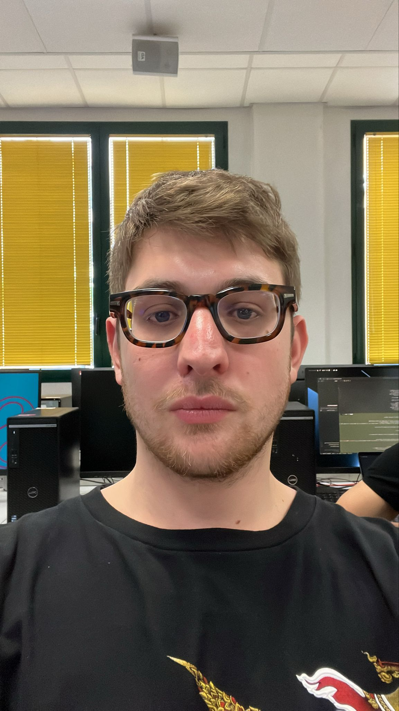

Il progetto consiste nel creare un simulatore software di 3 lucciole indipendenti. Inizialmente lampeggiano a frequenza propria e costante, ma dopo 10 secondi devono iniziare a lampeggiare in maniera sincronizzata. Al sistema andrà aggiunto un sonar in grado di rilevare ostacoli: in base alla distanza rilevata (maggiore o minore di una distanza minima), il comportamento delle lucciole dovrà variare dinamicamente tra sincronizzato e randomico.
Costruire il simulatore di un sistema costituito da 3 lucciole. Inizialmente, le lucciole lampeggiano ciascuna con una frequenza (costante) propria.
Elenco dei requisiti:
Il problema richiede di modellare un sistema in cui componenti altamente autonomi (le lucciole) devono coordinare il proprio stato al verificarsi di certe condizioni. Adottando un paradigma ad Attori (es. QActor), è fondamentale separare le entità che detengono il flusso di controllo logico (Actors) da quelle che fungono da meri trasportatori o contenitori di dati (POJO).
Sorge il problema di come rappresentare le lucciole e di come il sonar può calcolare le distanze. Per risolvere questo problema, si sceglie in fase di introdurre una Griglia come ambiente per il sistema. Adottando una griglia le lucciole potranno essere facilmente rappresentate in celle e il sonar potrà calcolare facilmente le distanze. Nasce così una nuova entità:

GIT repo: https://github.com/Daniele949s/IngSistemiSoftwareM-Corso2026-iss2026